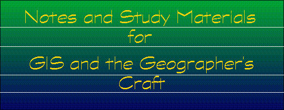

Coordinate Systems by Peter H. Dana -- this overview of coordinate systems for georeferencing provides a brief description of local and global systems for use in precise positioning, navigation, and geographic information systerms for the location of points in space.
Data Sources by Kenneth E. Foote and Margaret Lynch
Database Concepts: Issues of Modeling and Representation by Kenneth E. Foote and Donald J. Huebner. Discusses raster and vector methods, database file structure, and topological relationships.
Error, Accuracy, and Precision by Kenneth E. Foote and Donald J. Huebner -- Lecture notes developed for the Geographer's Craft project. Defines accuracy, precision, and error, discusses types and sources of inaccuracy and imprecision, describes problems of error propagation and cascading error.
Ethical Issues in Electronic Information Systems by Margaret Lynch -- What challenges have technical advances in Electronic Information Systems presented for professional ethics? This module discusses the role of ethincs in the rapidly evolving world of Electronic Information Systems, outlines emerging standards of conduct ("netiquette"), acceptable use policies, network-related copyright law, privacy issues, and ethical issues directly related to the use and management of GIS data.
Geodetic Datums by Peter H. Dana -- Discusses the datums which define various reference systems. Includes discussions of geometric models of the earth, global coordinate systems, types of datums, and datum conversions.
GIS: Context, Concepts, and Definitions
by Kenneth E. Foote and Margaret Lynch -- An introduction to the use of
information technologies in geography. This module includes definitions
of cartography, computer-aided drafting, photogrammetry and remote sensing,
spatial statistics, and geographic information systems. It also outlines
the course of technological innovation, and examines GIS as an integrating
technology.
Legal Issues Relating to GIS by Margaret Lynch and Kenneth E. Foote -- Legal perspectives on the goal of public access and the right to privacy. This module includes sections on the Freedom of Information Act, the Open Records Act, product (GIS data) liability, and copyright law.
Managing Error by Kenneth E. Foote and Donald J. Huebner--Lecture notes developed for the Geographer's Craft project. Information and techniques for controlling and managing error in GIS projects. Examples of attribute accuracy, calculating Cohen's Kappa, and sensitivity analysis.
Map Projections by Peter H. Dana -- Introduction to map projections with lots of illustrations and links to related sites.
Project Lifecycle and Project
Planning by Kenneth E. Foote and Shannon Crum